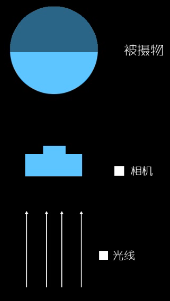
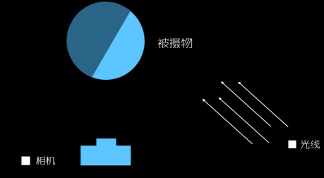
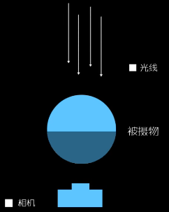
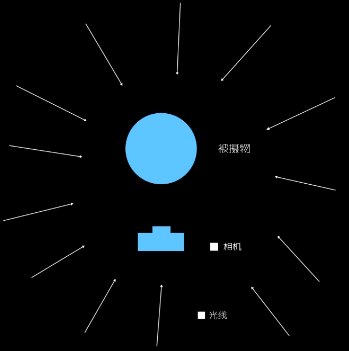

学习资料：B站
-- 摄影入门课程：BV13b411U7Pz
常见人像摄影用光方法
顺光拍摄
与照相机的拍摄方向一致的光叫顺光;顺光使被摄体均匀受光。整个景物的照度一致，沒有明显的亮度和暗部，因而缺乏立体感，拍出的照片显得平淡、呆板，如果在强烈的阳光下拍摄， 被摄者往往双眼眯成条细缝 。
顺光光位一般用来拍证件照，大头照。
顺光光位在影楼里有用得比较多，因为顺光光位拍摄会显得脸非常亮，大部分人比较容易接受，而且可以减少大量后期工作
顺光光位图把老人的脸上的纹路拍得非常清晰，但是这样拍缺乏立体感
顺光拍摄时，注意抓拍好人物的表情。有时需要有人在人物前面打一盏灯，把人物表情拍得清楚。
测光拍摄
阳光从侧面照射景物，使景物一部分亮，一部分暗。侧光突出了景物上的明暗对比，受光部明亮，背光部分隐没在阴影中。侧光照射的景物显得层次丰富，立体感强，是风光摄影和人像摄影中常用的光线，但拍摄人像时要注意光比的变化。
侧光拍摄，背景线条感强

下面照片，光源是从人的侧后方照过来。这个测光把人物的鼻梁拉得特别高，使得人非常有精神。
主光源是从右后方照过来，另外左前方也用了一盏灯（反光板）作为补光，背景也打了一盏灯作为背景光源
下面是90度角的侧面光
侧逆光，主光源从小女孩侧后方照过来。
逆光拍摄
阳光从被摄体后边射来形成逆光照明，被摄体正面比较暗，边缘有一道明亮的轮廓线。如果被摄体处于一个暗背景，这道亮线就会把被摄体与前景截然分开，产生强烈的立体感。逆光拍摄要注意补光。
逆光拍摄在没有补光的条件下，只能排除剪影的效果
在补光的条件下可以拍出非常漂亮的逆光人像
常见的补光方法：①反光板（在人像前面拿反光板）②外置闪光灯；③内置闪光灯
逆光拍摄：注意光圈的大小，脸部和发丝不能过曝
下面是反光板补光方法。主要要以深色的背景作为逆光人像背景，不然头发的轮廓光会不明显
漫射光拍摄
漫射光是晴天背阴处的反射光或阴天透过云层的光线，没有明显的方向，光线比较柔和，景物没有明显的亮部和暗部，反差柔和，适合拍集体照。
下面是漫射光海边拍摄的效果。
下面是阴天拍摄人像的效果。阴天拍摄人像是一个不错的光位选图
人像拍摄构图
构图（主体的位置）
1. 黄金分割点（九空格）
人像的头部会作为一个点，放在黄金分割单的地方
这张特写的图片，眼睛作为一个点也是放在黄金分割点上：
双人照也用到黄金分割点：
2. 中心构图法
中心构图往往使人感到稳重（平淡）的一种构图方法
中心构图法一般用在特写中，可以结合运用九宫格构图法，将人物的头部放在画面1/3的地方

中心构图法也可以用在双人照或者背景比较对称的环境中
3. 吊角构图
把人放在画面中的一个角落。如果人视觉朝右则把人放在左边，如果人视觉朝左则把人放在右边
1. 虚实对比
背景虚化：
前景虚化：
2. 大小对比
3. 远近对比（和大小对比相似）
4. 色彩对比
往往是利用画面中的背景颜色和人身上的衣服颜色作为一个对比
5. 剪影
拍摄剪影时需要凸出人的轮廓，一般人的侧边轮廓比较清晰
外景拍摄中不同拍摄角度的运用
拍摄高度是指摄影镜头与被摄对象在垂直面上的相对位置。一般分为平摄、俯摄和仰摄三个角度。
1.平拍角度的运用
平摄时镜头与被摄对象在同一水平线上，被摄人物没有明显的透视变形，视觉效果，与人们正常观看事物的感受相同，拍摄效果显得自然、客观、平等、亲切。正常情况下拍摄人像，全身像时照相机高度等同于被摄对象的腰部，半身像时照相机高度等同于被摄对象的胸部，特写时照相机高度等同于被摄对象的眼睛。
2.俯拍角度的运用
俯摄时镜头高于被摄对象的视平线，从高处向下拍摄，这时被摄对象显得低矮且身体压缩，如果是近景头像，会出现额头夸大而下巴窄小，视觉上可给人清秀之感。
3.仰拍角度的运用
仰摄时镜头低于被摄对象的视平线，从低处向上拍摄，这时被摄对象显得高大且身体修长，如果是近景全身会出现脚长身短，视觉上可给人高大挺拨感觉
转载请注明来源，欢迎对文章中的引用来源进行考证，欢迎指出任何有错误或不够清晰的表达。可以在下面评论区评论，也可以邮件至 1909773034@qq.com